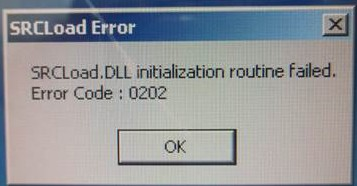

Service History
Subject: UBS SRCLoad.dll error upon starting MMI
Handler Model: NS-UBS (UBS02, S/N: 15932)
Controller: RC520 MMI 13.22, SPEL CT 2.81b
Date: 26 Jun 2013
Symptom
UBS SRCLoad.dll error upon starting MMI after SPEL System Restore, Error Code: 0202.
Customer trying to troublehoot original UBS HDD that has Error 2015.

Action
This error code could be due to incompatible backup SPEL System files.
Customer informed that after SPEL System restore. So it can't be a hardware address setting conflict.
Why need to do SPEL System Restore in the first place?
Was there any other error such as E-9022?
Try restarting RC520.
Try replacing CPU Board.
Try replacing HDD.
Corrupted / incompatible SPEL System files.
Cause
Remarks
This occurred error once when loading MMI for NS-8000 but after reboot the RC520, it was ok.
Another time was after HDD Recovery, but after calibrated all robot Axes, it was ok.
Sometimes, it could be due to windows 2000 or spel resource setting such as address or IRQ conflict.